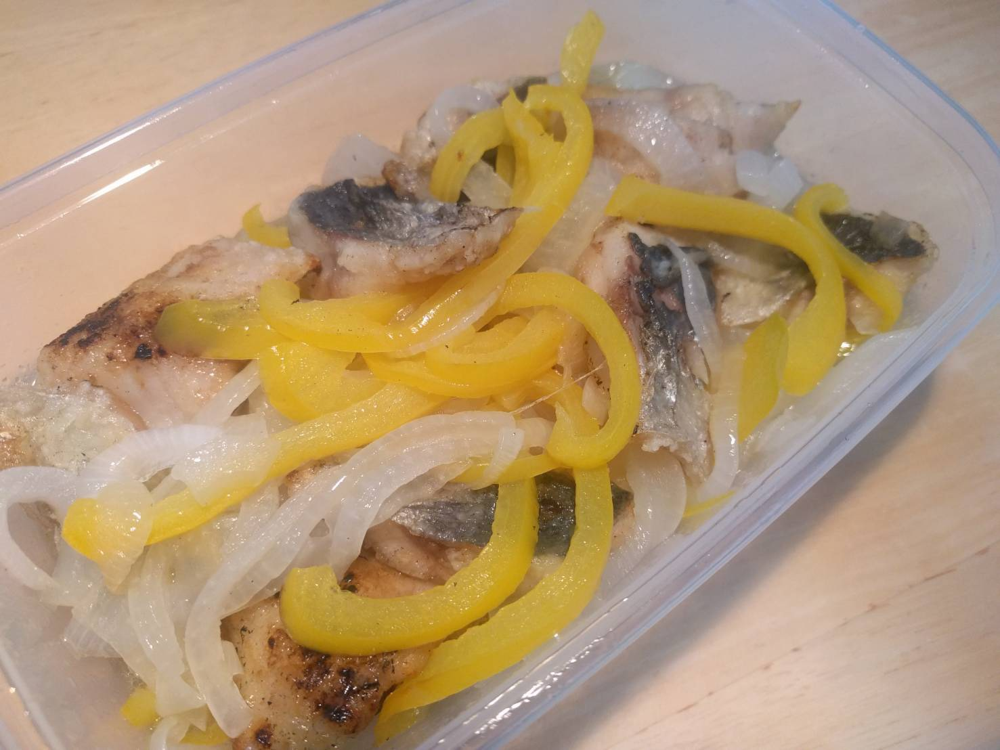

なぜAgrlienに入ったか…５
2020.07.24 清水
なぜアグリアンに入ったか
清水
ブログ 清水
私はなぜアグリアンに入ったのか。もっとも簡単に言えば、Aさん（アグリアン前年度代表）に誘ってもらって楽しそうだったから、ということになるのだが、さすがにそれだけじゃ薄っぺらいし文字数も埋まらない。じゃあなぜAさんに誘ってもらうことになったのか、なぜ楽しそうに思えたのか振り返ってみたい。
Aさんとの出会いは、おととしの夏休みに参加した大学の体験活動プログラムにさかのぼる。そのプログラムは、青森で農業と漁業をどっぷりディープに体験しよう！という、なかなか物好きでないと参加しなさそうなものだった。私がそのプログラムに参加したのは、経済学部で農業経済のゼミに出ているうちに農業の魅力にはまってしまったからだ。だが、東京生まれ東京育ち、それまで土に触れることすらほとんどなかった当時の私には、自分でやってみたこともないくせに偉そうに農業のことを語る資格などなかった。そこで、少しでも農業の現場にかかわることができる場を求めていたのだ。青森での体験はその名の通りどっぷりディープで、毎日農作業で体を動かすのはとても気持ちが良かった。それに、Aさんという農業のプロとも知り合うことができた。
そんなAさんからお誘いがあったのは去年の春のことだ。私は経済学部を卒業して農学部へ院進したばかりだった。農学部にはあまり知り合いがいなかったし、経済学部と農学部ではまるで別の大学のように文化も違っていて、慣れることができるのか不安だった。そんな中初めて活動に参加してみたとき、同じ農学部生がたくさんいて、皆農業や食への強い思いを持っていて、話しているだけでとても居心地がよかった。それまでいたコミュニティではそもそも農業の話など話題にのぼることすら稀で、珍しがられることがほとんどだったのだ。だから、楽しそう！と思いすぐに入ろうと決めた。
以上が、私がアグリアンに入った理由だ。色々書いてはみたが結局のところ、楽しそう！という衝動が一番大きかったように思える。でもそういう衝動はすごく大事な原点だとも思う。少しでも、楽しそう！と思ったならもう十分。ぜひとも新メンバー、お待ちしています！
写真は今年のアグリアンの下中玉ねぎで作ったアジの南蛮漬け。
